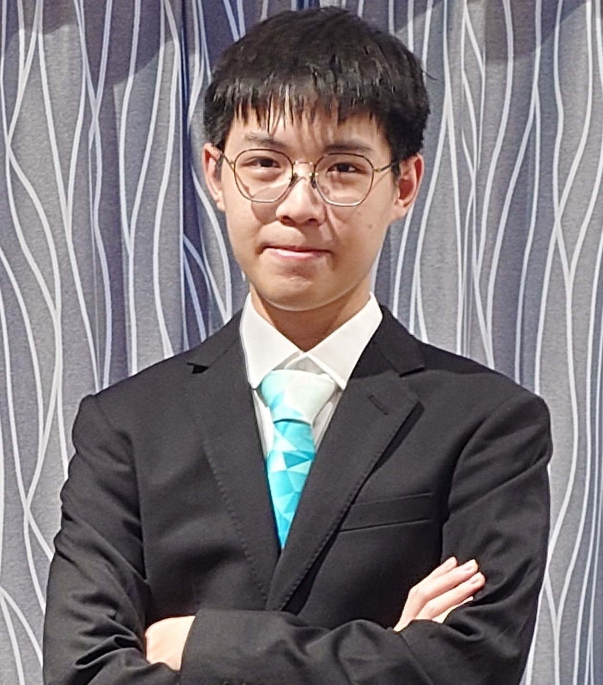

Ting Yin Leung
Thomas
I'm a detail-oriented and highly adaptable third-year Data Science student. Proficient in Python, R and SQL for data manipulation and model building to develop and maintain a software, with hands-on experience applying these skills in academic projects. A proactive and collaborative team player with excellent communication skills in English and Chinese to cooperate effectively with the team.